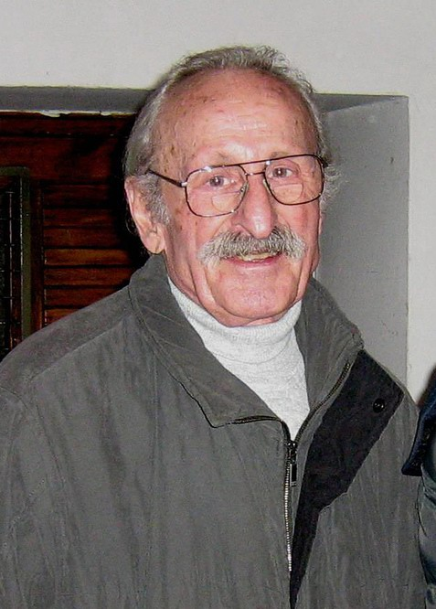
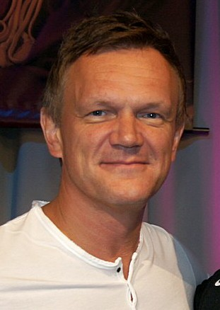
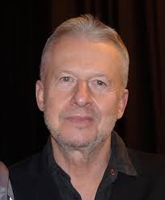

Polska jest w Europie kinowym fenomenem - z roku na rok, w przeciwieństwie do Zachodu, sprzedaj się coraz więcej biletów. Kin nie zabił ani internet, ani serwisy jak Netflix. Pomogło im 500+ i nowe multipleksy.Tylko w zesżłym roku w Polsce sprzedano 59,7 mln biletów. Od 2013 roku sprzedaje ich się coraz więcej. Mimo to wskaźnik pokazujący, ile razy był w kinie statystyczny Polak wciąż jest niski.
NAJPOPULARNIEJSZE POLSKIE FILMY
1.PIANISTA
Dramat wojenny z 2002 roku w reżyserii Romana Polańskiego, koprodukcja francusko-niemiecko-polsko-brytyjska. Film jest adaptacją autobiografii pianisty i kompozytora żydowskiego pochodzenia Władysława Szpilmana. Szpilman w czasie II wojny światowej najpierw przebywał w getcie warszawskim.
2.TYLKO NIE MÓW NIKOMU
Polski film dokumentalny z 2019 roku w reżyserii Tomasza Sekielskiego, opowiadający o wykorzystywaniu seksualnym małoletnich przez księży katolickich w Polsce i ukrywaniu tych praktyk przez kościelnych hierarchów, najpopularniejszy polski film w 2019 roku na YouTube.
3.BOŻE CIAŁO
Polski film obyczajowy z 2019 w reżyserii Jana Komasy, zrealizowany według scenariusza Mateusza Pacewicza. Światowa premiera filmu odbyła się 2 września 2019 w sekcji Venice Days na 76. MFF w Wenecji. Z kolei polska premiera odbyła się 11 października 2019.
4.POLITYKA
Polski opiniotwórczy tygodnik społeczno-polityczny o charakterze liberalno-lewicowym, wydawany od 1957 w Warszawie. „Polityka” utrzymuje się na czołowych miejscach pod względem wielkości sprzedaży wśród polskich tygodników opinii, w tym często na pierwszym miejscu.
5.KOBIETY MAFII
Polski film sensacyjny wyprodukowany w 2018 roku, którego reżyserem, scenarzystą i producentem jest Patryk Vega. Oglądanie filmu dozwolone od lat 15.
ZNANI POLSCY AKTORZY
MACIEJ STUHR – polski aktor filmowy i teatralny, współzałożyciel kabaretu Po Żarcie, od 2008 aktor Nowego Teatru w Warszawie. Z wykształcenia jest psychologiem oraz aktorem. Laureat Orła za pierwszoplanową rolę w filmie Pokłosie.
FRANCISZEK PIECZKA – polski aktor teatralny i filmowy. Kawaler Orderu Orła Białego.
CEZARY PAZURA – polski aktor teatralny i filmowy, reżyser, prezenter telewizyjny, artysta kabaretowy i youtuber, kiedyś piosenkarz. Uznawany za jednego z najpopularniejszych aktorów polskiego kina lat 90.
BOGUSŁAW LINDA - aktor, reżyser i scenarzysta teatralny i filmowy, komik oraz pedagog. Występował w filmach takich twórców jak Krzysztof Kieślowski,Andrzej Wajda i Władysław Pasikowski.
Wywiad o rynku filmowym w Polsce na początku lat 90.